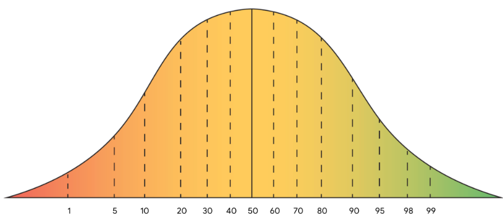
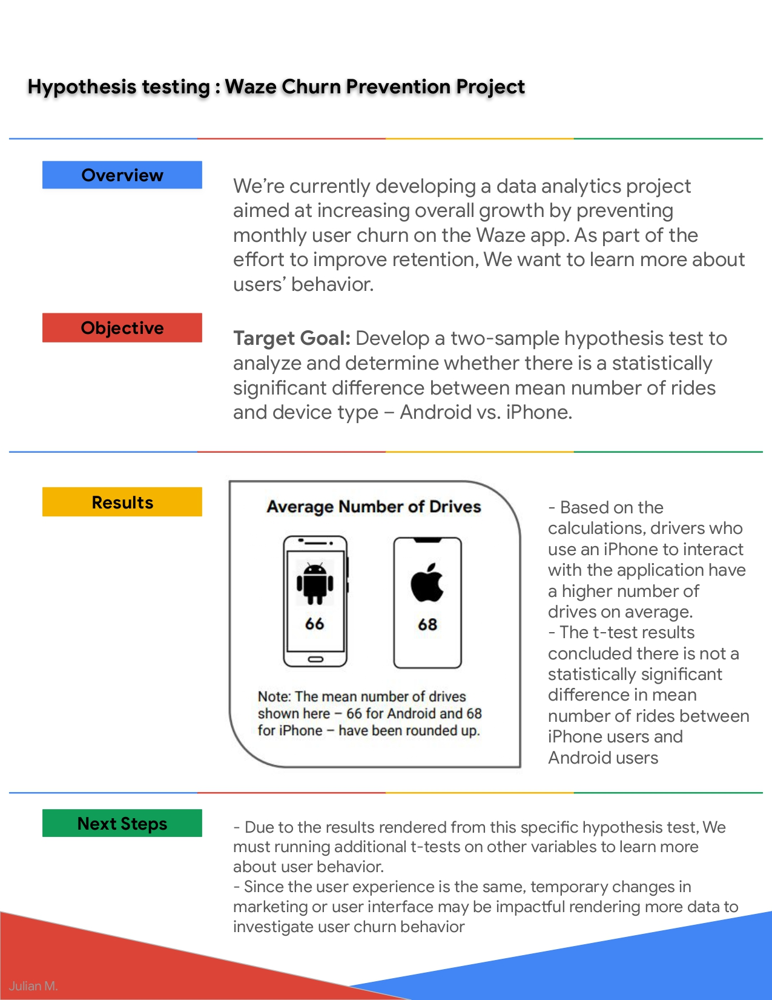

Hypothesis testing : Waze Churn Prevention Project
Hypothesis testing
In this project, our primary objective of this project is to demostrate knowledge of how to conduct a two-sample hypothesis test and apply descriptive statistics and hypothesis testing in Python.
Check out the process and code c:
Conclusion:
1. 𝐻0 : There is no difference in average number of drives between drivers who use iPhone devices and drivers who use Androids.
𝐻𝐴 : There is a difference in average number of drives between drivers who use iPhone devices and drivers who use Androids.
2. The p-value(14.33%) is greater than the significance level(5%), we can conclude that there is not a statistically significant difference in the mean district literacy rates between iphone and android users. In other words, we will fail to reject the null hypothesis 𝐻0 .
3. The drivers who use iPhone devices on average have a similar number of drives as those who use Android.
